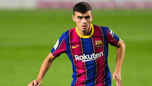

Pedri Gonzalez
Pedri, es de los mejores futbolistas del FC Barcelona en la temporada. A pesar de que solo tiene 18 años de edad, el joven volante español ha soportado la presión de jugar en un club tan grande como el azulgrana y se ha ganado la titularidad.
